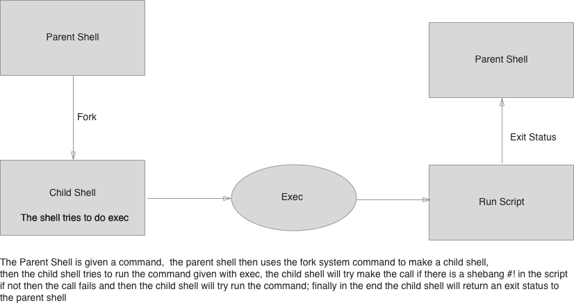

Unix Programming and Regular Expressions Workshop - Decision Making and Exit Status
Sections:
- Exit Status
- Specific Exit Statuses
- if elif else fi
- Shell Test Status and conditionals
- Exit Status Examples
- Reverse Conditional
- Logical Operators
- Exit Command
- Test Command Description
- Test Command Usage
- Test String Comparison
- Test if and conditional examples
- Case Statement Description
- Case Statement Syntax
- Best Practices
- Bread Crumb Navigation
Exit Status

In computing, particularly in the context of the Unix operating system and its workalikes, fork is an operation whereby a process creates a copy of itself. It is usually a system call, implemented in the kernel. Fork is the primary (and historically, only) method of process creation on Unix-like operating systems.
Specific Exit Statuses
Once a command finishes whether the command is external or built-in it will return an integer value between 0 to 255 to the shell
echo $?
Remember that $? while show the exit status of the last command
| Exit Status | Meaning |
|---|---|
0 |
Success |
| Non zero | Failure |
126 |
Command was found but the command could not be run |
127 |
Command could not be found |
129 to 255 |
A death by signal ==> (250 - 128) need to subtract 128 for the actual signal |
| Other values | Different values are given by the actual command to indicate failure |
if elif else fi
The Syntax of the if, elif, else, and fi
if test-commands; then
consequent-commands;
[elif more-test-commands; then
more-consequents;]
[else alternate-consequents;]
fi
Each command is separated by semicolon ; or a new line
if test-commands
then
consequent-commands
[elif more-test-commands
then
more-consequents;]
[else alternate-consequents;]
fi
Notice here I put then in a new line
Both elif and else are optional and notice that to close the if command we used fi.
The fi syntax is based on Algol 68 syntax that Steven Bourne incorporated into Bourne Shell
Shell Test Status and conditionals
The shell will check the exit status of the last command between if and then
If zero 0 is returned this means success so run commands after the then block
Otherwise move onto the next set of commands if there are any
elif is really short for "else if" and the same type of action is applied as the if
- The
elifis optional and you can use as many as you need
The else is only if the if statement or elif statement do not run
- The
elsestatement is also optional
The exit status will the last command that is run
Exit Status Examples
cd /somepath/not/exist
This prints error message
echo $?
This should return 1 signifying failure
if cd /dont/exist
then
'\000'
else
echo "could not change directory"
fi
Notice here we put null character '\000' and then echoed message
echo $?
Notice that this prints 0 for success even though this isn't very clear usage
if ! cd /some/file/dont/exist
then
echo could not find the file
fi
Here we use the ! operator which has more clear intent in the script
echo $?
Notice that this prints 0 for success but it is more clear because of ! operator usage
Reverse Conditional
The ! command is used with if to test reverse condition
This syntax was added by POSIX
Logical Operators
Operator |
Meaning | ||
|---|---|---|---|
&& |
This is a logical AND operator which means if this and that condition |
||
| `\ | \ | ` | This is the logical OR operator which means if this or that condition |
Both of these operators are short circuit operators
- The processing will stop as soon as the shell knows the result of the expression
if ([$var == 1 && $var2 == "blah"]); then
commands;
fi
This command will short circuit if first check fails meaning only $var is evaluated
if ([ $NUM1 == 1 ] || [ $NUM2 == 1 ]) && [ -z "$STR" ]); then
commands;
fi
This command will short circuit if first check passes meaning that $NUM1 and $NUM2 are evaluated
Both && and || have same precedence
Exit Command
The Exit command) will return the status of the script
The script will execute immediately after the exit command is invoked
If there is no value then the status returned will be of the last command run
Zero 0 signifies success and nonzero signifies failure
Don't use negative numbers or numbers greater than 255 for your own status codes
Small values work best for exit status codes
An exit status is defined for each command
Test Command Description
The test utility evaluates the expression and, if it evaluates to true, returns a zero (true) exit status; otherwise it returns 1 (false).
If there is no expression, test also returns 1 (false).
The test command is a multipurpose command that can check for many things
The test command has 2 forms:
testsomething to test[ something to test ... ]The brackets need to have a space in between them to work correctly- So
[something to test]won't work
- So
The test command can check for:
- file attributes (is it readable, writable, is it a directory)
- String comparisons:
- equal,
- not equal
- less than
- Integer comparisons
Read the Test Command Wikipedia Doc) for full options available
Test Command Usage
Unary Operators:
-r tests if file is readable
if [ -r someFile ]
There are more unary operators and they are all written like -r
Binary Operators:
-eq is a binary operator
if [ $# -lt 2 -o ! -e "$1" ]
then
exit
fi
Remember that $# tells how many arguments were given to shell -lt stands for less than and -o stands for binary or operator and remember that ! is logical negation.
This is checking whether arguments is less than 2 or if the file doesn't exist if any of these are true then exit the script.
String comparisions use the following operators:
=!=<>
There aren't any operators like <= or >= for some reason
String Arguments#String_arguments)
Non-POSIX options:
-ais and-ois or
These operations can be troublesome
The man pages have bugs section detailing possible issues:
Both sides are always evaluated in -a and -o. For instance, the writable status of file will be tested by the following command even though the former expression indicated false, which results in a gratuitous access to the file system: [ -z abc -a -w file ] To avoid this, write [ -z abc ] && [ -w file ]
It is preferable to use && and || over these operators for this reason
Test Command Options
File Level Tests:
-eTrue if file exists (regardless of type).-rTrue if file exists and is readable.-wTrue if file exists and is writable. True indicates only that the write flag is on. The file is not writable on a read-only file system even if this test indicates true.-LTrue if file exists and is a symbolic link.
String Tests:
=True if the strings s1 and s2 are identical.- str1 = str2
!=True if the strings s1 and s2 are not identical.- str1 != str2
-nTrue if the length of string is nonzero- -n str
-zTrue if the length of string is zero.- -z string
Numeric Tests:
-eqTrue if the integers n1 and n2 are algebraically equal.- n1 -eq n2
-neTrue if the integers n1 and n2 are not algebraically equal.- n1 -ne n2
-ltTrue if the integer n1 is algebraically less than the integer n2.- n1 -lt n2
-gtTrue if the integer n1 is algebraically greater than the integer n2.- n1 -gt n2
-leTrue if the integer n1 is algebraically less than or equal to the integer n2.- n1 -le n2
-geTrue if the integer n1 is algebraically greater than or equal to the integer n2.- n1 -ge n2
Read the Man pages for Test for more options
Also to see built-in test command help in bash run help test in zsh run run-help test
There is also another none builtin in /bin or /usr/bin which runs in C programs that is similar
Test String Comparison
Always use quotes when doing string comparison
if [ "$somevar" = off ]; then
do something
fi
Test if and conditional examples
if test -f /etc/passwd && grep root /etc/passwd > /dev/null
then
echo the password file exists and so does the root user
elif test -f /etc/group && grep root /etc/group > /dev/null
then
echo group file exists and so does the group root
else
echo there is no password or group file or there is notuser root or group root
fi
Remember that /dev/null will redirect output of grep else we will get more output put into stdout. This script checks whether there is a file that exists called /etc/passwd and if there is a user named root and if so print message else if there is a file called /etc/group and if a group named root exists and if so prints message else it prints message
if grep marcel /etc/passwd > /dev/null || grep root /etc/passwd > /dev/null
then
echo marcel or root exists as a user
fi
This example uses or || operator this time
bash
type in bash to get into a subshell
ps
This should print out multiple versions of bash since we are in a subshell
exit 18
This will exit out of subshell and send value 18 to parent shell
echo $?
We can confirm this with the $? command
Remember we can create a shell program interactively using > as stdin
cat > check_arguments.sh
#! /bin/sh
if [ $# != 2 ]
then
echo Usage: my program -f /a/file >&2
exit 1
fi
# some more program related lines
Paste the program above into your shell then hit enter and lastly press Control d in your keyboard to signify end of line.
./scripts/decision-making-and-exit-status/check_arguments.sh
If you run this command with no args you will see the output Usage: my program -f /a/file
and the exit status of 1 with echo $?
z=
Here we set a variable z to an empty value
if [ -n "$z" ]
then
echo z is $z
else
echo z is empty
fi
Here we use -n operator which checks if a string has length and we use the test command form of [ ... ]
var=avalue
Here we create a variable with a value
if [ -z "$var" ]
then
echo var is empty
else
echo var is $var
fi
This uses -z operator checks if a string length is zero and the test command form [ ... ]
bash
Enter a subshell
c=
Set a value of c
set -x
Set a value of c variable and set command line execution tracing
if [ $c != foo ]; then echo worked ; fi
Notice it didn't work because there is an empty space before != comparison
if [ S$c != Sfoo ]; then echo worked ; fi
This worked because we preceded $c with a character the != operator is binary and an empty space isn't considered a proper argument
c='some spaces here'
Now rerun the previous command
if [ S$c != Sfoo ]; then echo worked ; fi
It fails with too many arguments
if [ "$c" != foo ]; then echo worked ; fi
Notice it works because we quoted $c this time
Extended Test Command
Issues with Regular Test Command and [ ... ]:
- The extended test command is syntactically the same as any other command
- Spaces are required between everything
- Quoting is required for parentheses,
<, and> - Quoting is required for variable values
- Complicated expressions can be hard to write
and,or, and grouping
- the And operator
aand the Or operatoroare not portable
The extended test command originated in KornShell "ksh" and in Bash) and in Zsh
Even though the Extended Test Command is not in POSIX it has been available for a long time
The syntax for extened test command is [[ ... ]]
It is almost like a separate language inside the brackets
Features of Extended Test Command:
- Word Splitting disabled
- Filename Expansion disabled
<, and>are recognized as operators and not redirections- You can directly use
$varto get a variable value- You don't have to use double quotes like
"$var"
- You don't have to use double quotes like
- You can use
&&and||in the extended test command to chain your conditions - You don't need to quote
<,>for string comparisions - You don't need to quote parentheses for grouping
- File names can be used
/dev/fd/Nfor test file descriptors - The same features in the regular test command are available
Pattern Matching Abilities:
- You can use
=,==, and!=for pattern matching - Extended patterns using
extglobfor Bash andextendedglobfor zsh - You can quote the right hand arguments in order to do string comparisons
if [[ $FILE != !(*.c) ]]
- The
==operator is preferred over=for comparisions - You can use str =~ pattern for ERE type matching
if [[ -f $SOMEFILE && -r $SOMEFILE ]]
then
echo $SOMEFILE is both a regular and readable file
fi
Here notice we didn't double quote variables and everything should work fine
bash
Go into bash subshell if you are in a shell zsh
set -x
Set execution tracing
twoWords="Hista Mikista"
if [ -z $twoWords ] ; then echo twoWords is a empty ; fi
This prints error because expansion uses word splitting provides more arguments
if [[ -z $twoWords ]] ; then echo twoWords is a empty; fi
This time it works because expansion is not split into separate words instead $twoWords is given as one word
shopt -s extglob
This enables extended glob options in bash
set +x
Turn off tracing
if [[ $CFILE == !(*.o) ]]; then echo $CFILE is not an object file; fi
Here with extended glob features in bash and extended test command we check whether a file is not an object file
if [[ Marcel =~ [A-Z][a-z]+ ]]; then echo Marcel; else echo Not Marcel; fi
Here we use a feature in bash and zsh to do pattern check with =~
regex='[A-Z][a-z]+'
if [[ Marcel =~ $regex ]]
then
echo Marcel
else
echo Not marcel
fi
Marcel
Here we use variable and it still works
The extended test command [[ ... ]] has features over the regular test command [ ... ]
Case Statement Description
The case statement is similar to the switch statement in C, Java, C#, JavaScript, etc
The case statement tests a single value against multiple patterns one after another pattern
The case statement is easier to read and to write than a series of chained if ... elif ... elif ... else statements
case: case WORD in [PATTERN [| PATTERN]...) COMMANDS ;;]... esac
Execute commands based on pattern matching.
Selectively execute COMMANDS based upon WORD matching PATTERN.
The | is used to separate multiple patterns.
Exit Status: Returns the status of the last command executed.
Case Statement Syntax
case expression in
pattern1 )
statements ;;
pattern2 )
statements ;;
...
* )
statements ;;
esac
Case Statement Execution:
Case statement first expands the expression and tries to match it against each pattern.
When a match is found all of the associated statements until the double semicolon (;;) are executed.
After the first match, case terminates with the exit status of the last command that was executed.
If there is no match, exit status of case is zero.
No quotes are required on the value between case and in
Make sure that each case group ends with ;;
The ;; can be on a line by itself which is often more readable
The ;; is optional before esac but it is good convention to do so.
You can optionally use a leading left parenthesis before each pattern set
case expression in
(pattern1 )
statements ;;
(pattern2 )
statements ;;
...
* * )
statements ;;
esac
Open up scripts/decision-making-and-exit-status/case_statements.sh to look at an example of case statements
We won't go over details of loops and functions yet because we will discuss it later in the workshop.
Best Practices
The only universal success status code is zero
The Syntax in conditionals is very important
Make sure to use a newline or semicolon to make the next keyword work properly
Be sure to use !, && and || in your scripts
If you need to return an exit status make sure it is small and use them sparingly
If you try to use < and > then you must quote them
Double quotes should be used in variable values
Group conditions with ( )
Try not to confuse string comparisons with numeric comparisons
Use shell operators && and || to chain tests instead of -a and -o
Of the 2 test forms that you can use prefer [ ... ] form over the test version
Make sure to save exit status of $? and do it immediately
Use ! to invert cases
Quote Variable expansion arguments in the test command
There are possible spacing issues with test command
Use the extended test command [[ ... ]] because it makes your scripts more readable and easier to write
case ... esac is a more clean pattern to use than a bunch of if ... elif ... else in your script
use pattern1 | pattern2 where appropriate
Use a final * ) for the default case
Always Supply the final ;; before esac
Bash extglob and Zsh extendedglob can be used for extended case patterns
Bread Crumb Navigation
| Previous | Next |
|---|---|
| ← Arithmetic Operations and variables | Looping → |